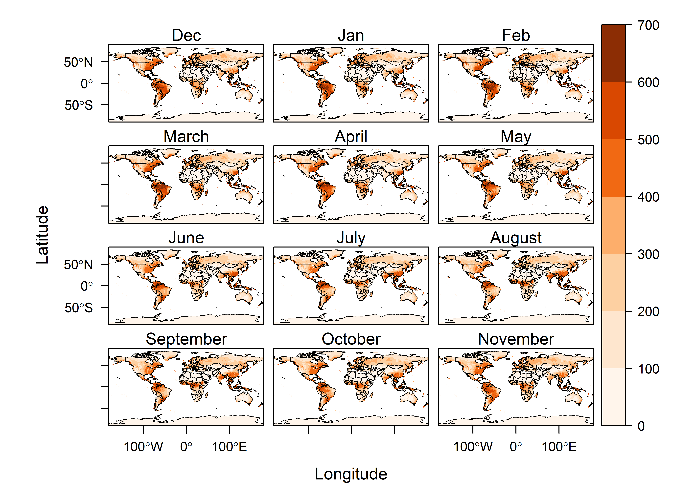

This RMarkdown document describes reading and plotting a netCDF file.
## Warning: package 'ggplot2' was built under R version 3.5.3## Warning: package 'ncdf4' was built under R version 3.5.3## Warning: package 'raster' was built under R version 3.5.3## Warning: package 'rasterVis' was built under R version 3.5.3## Warning: package 'latticeExtra' was built under R version 3.5.3## Warning: package 'ncdf.tools' was built under R version 3.5.3## Warning: package 'zoo' was built under R version 3.5.3Read world countries shapefile
Now read in soil moisture data with ncdf4 package
nc_path <- "C:\\Users\\jonjo\\Documents\\geog490\\data\\"
nc_name <- "soilw.mon.ltm.v2.nc"
nc_file <- paste(nc_path,nc_name,sep="")
soil_raster <- raster(nc_file,varname="soilw")
soil_raster # Convert the coordinates of raster to -180-180 degrees## class : RasterLayer
## band : 1 (of 12 bands)
## dimensions : 360, 720, 259200 (nrow, ncol, ncell)
## resolution : 0.5, 0.5 (x, y)
## extent : 0, 360, -90, 90 (xmin, xmax, ymin, ymax)
## coord. ref. : +proj=longlat +datum=WGS84
## data source : C:/Users/jonjo/Documents/geog490/data/soilw.mon.ltm.v2.nc
## names : Model.Calculated.Long.Term.Monthly.Mean.Soil.Moisture
## z-value : 0000-12-30
## zvar : soilw## class : RasterLayer
## dimensions : 360, 720, 259200 (nrow, ncol, ncell)
## resolution : 0.5, 0.5 (x, y)
## extent : -180, 180, -90, 90 (xmin, xmax, ymin, ymax)
## coord. ref. : +proj=longlat +datum=WGS84
## data source : in memory
## names : Model.Calculated.Long.Term.Monthly.Mean.Soil.Moisture
## values : 1.862645e-06, 738.2755 (min, max)
## z-value : 0000-12-30Finally, plot the soil moisture data using the levelplot() function from rasterVis:
NC_soil_ltm <- stack(nc_file,varname="soilw") # Raster stck object
NC_soil_ltm <- rotate(NC_soil_ltm) # Rotate the raster object coordinates
names(NC_soil_ltm) <- c("Dec","Jan","Feb","March","April","May","June","July","August","September","October","November")
#pngfile <- "NC_soil_ltm.png"
#png(pngfile, width=729, height=729) # open the file
cutpts <- c(0,100,200,300,400,500,600,700) # Set the cut points at the range of values of the dataset
cutpts## [1] 0 100 200 300 400 500 600 700plt <- levelplot(NC_soil_ltm , at=cutpts, cuts=8, pretty=T,
col.regions=(brewer.pal(8,"YlOrBr")))
plt + latticeExtra::layer(sp.lines(world_outline, col="black", lwd=0.5))